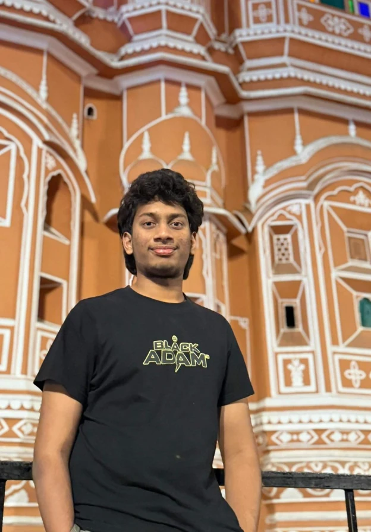
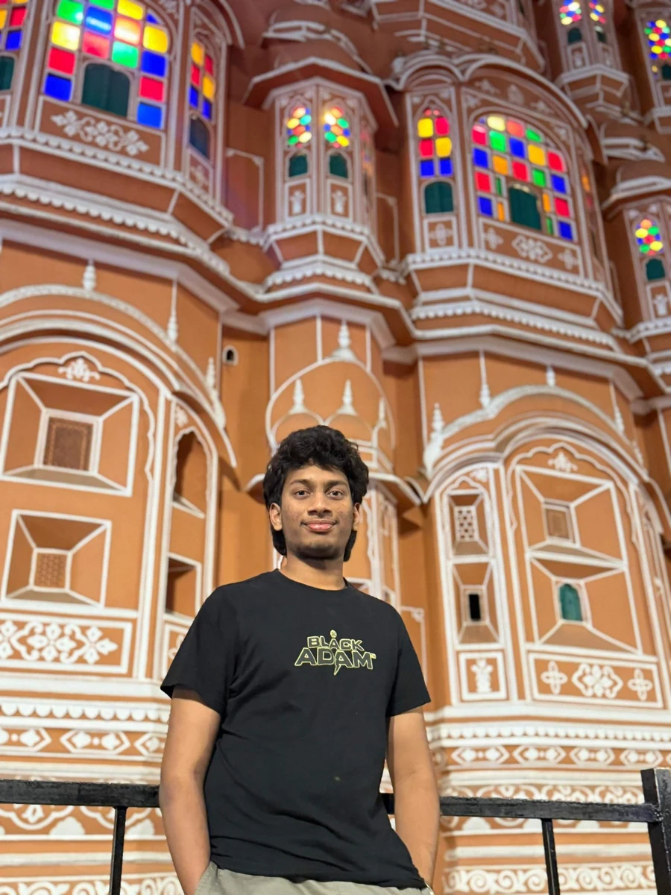

Learning.
Building.
Exploring.
Hi, I'm Shanmukh Datta. I study engineering at NIT Jalandhar and enjoy turning questions into experiments, code, and tools people can use.
↓ take a look at my work
that's me ↑Inside my notebook.
✎ exploreWhere I've been learning & working ✳
Web Development Team Member
Center for Training & Placement · NIT Jalandhar
Develop and maintain a MERN placement portal, including REST APIs for student and company registration.
Dec 2025 – PresentOn the noticeboard.
✳ achievementsSelected as a scholar for machine learning training.
Contributed to cross-file call-graph resolution in an open-source project.
Continuing experiments, prototypes, and open-source learning.
Things I made.
Organized like subject folders ↘
Published papers archive
No publications have been verified. When published, add official paper titles, DOI and links here.
All examples refer to your actual projects; statuses remain conservative.
Thoughts & scribbles ✎
Pages are being written.
No verified published posts are available. This area is ready for your original blog entries.
A little about me.
I study engineering at NIT Jalandhar and enjoy turning questions into experiments, code, and tools people can use.
My gallery ↘

Education / the classroom
Dr. B. R. Ambedkar NIT Jalandhar
B.Tech, Instrumentation & Control Engineering
Minor: Artificial Intelligence
2024–2028
Some subjects in my notebook
Data Structures, DBMS, Operating Systems, Machine Learning, Probability & Statistics
Experience / lines from my journey
Web Development Team Member, Dec 2025 – Present
Research Intern, Quantum Machine Learning
Software Engineering Intern
My toolbox / skills
Certificates & credentials ✳
Recognition
Amazon ML Summer School 2026 — selected scholar.
Certificate shelf
No unverified certificates are shown. Add verified credentials through the future CMS.